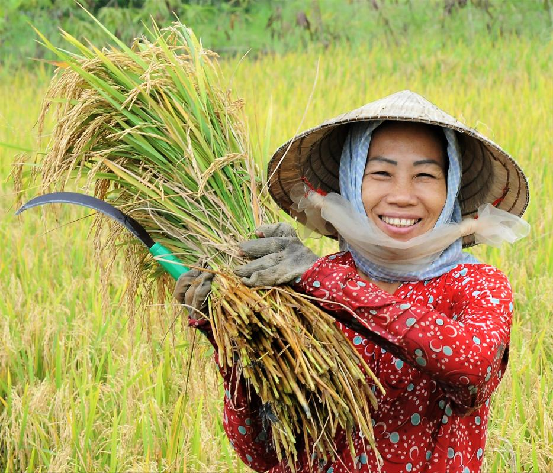
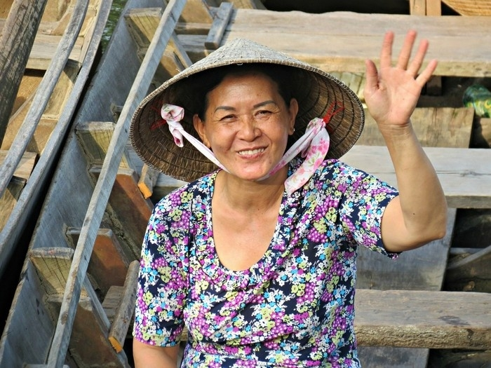

Trong làng quê miền Tây những năm 2020, cảnh quen nhất không còn là tiếng trẻ con nô đùa, mà là tiếng xe đò chạy đêm. Mỗi chuyến xe mang theo hai, ba người trẻ — và để lại những ngôi nhà vắng bóng ba thế hệ.
Theo Tổng cục Thống kê, giai đoạn 2009–2019, Đồng bằng sông Cửu Long là vùng duy nhất trong cả nước có tỷ lệ tăng dân số âm. Hơn 1,3 triệu người đã rời vùng đi nơi khác mưu sinh, phần lớn là lao động trẻ từ 18 đến 35 tuổi. Đến năm 2023, con số này tiếp tục tăng khi hạn mặn và mất mùa buộc thêm nhiều gia đình phải "tha phương cầu thực".
giai đoạn 2009–2019
dưới 35 tuổi
ít nhất 1 thành viên đi làm xa
PHẦN 01Những bản "làng khóa cửa"
Tại xã Tân Thành, huyện Cái Nước, Cà Mau, trưởng ấp Lê Văn Hoàng chỉ tay về phía con đường bê tông mới trải: "Cả ấp có 186 hộ. Giờ chỉ còn khoảng 40% là người trẻ. Số còn lại là ông bà và các cháu nhỏ. Nhiều nhà khoá cửa cả năm, Tết mới về."
Hoàng gọi đây là "làng khoá cửa", một khái niệm đang dần trở nên quen thuộc ở Đông bằng sông Cửu Long. Khi cha mẹ đi làm công nhân ở các khu công nghiệp phía Nam, ông bà ở lại trông cháu. Khi ông bà già yếu, các cháu được gửi về cho họ hàng, hoặc theo cha mẹ ra thành phố học trường công nhân.
PHẦN 02Ba chân dung, ba lựa chọn
Trên dải đất miền Tây, chúng tôi bắt gặp những cuộc đời ở các lứa tuổi khác nhau, mang theo những nỗi niềm riêng biệt về quê hương và sinh kế. Họ là những đại diện tiêu biểu cho ba ngã rẽ mà người dân Đồng bằng sông Cửu Long hôm nay đang phải đối mặt: đi, ở, hay trở về.Dù khác biệt về quê quán hay trải nghiệm cá nhân, nhưng câu chuyện của họ lại vô tình bện chặt vào nhau, vẽ nên một bức tranh chân thực về thực trạng mưu sinh và những trăn trở về việc tìm chỗ đứng ngay trên chính mảnh đất của mình.

Giữa căn nhà vắng bóng con trẻ, bà Nhi chọn cách bám trụ lại quê nhà để chăm sóc người mẹ già và giữ lấy mảnh đất tổ tiên. Suốt 8 năm qua, sợi dây liên kết giữa bà và hai người con đang làm việc tại Bình Dương chỉ vỏn vẹn là 5 ngày phép ngắn ngủi mỗi dịp Tết về. Dẫu nỗi nhớ con, nhớ cháu luôn thường trực trong lòng, nhưng người đầu bạc đành chấp nhận sự xa cách ấy như một lẽ tất yếu của thời cuộc, khi mảnh đất quê hương không còn đủ sức cưu mang sinh kế cho những người trẻ. "Nhớ thì có nhớ, nhưng ở đây thì lấy cái gì mà ăn đây?" - bà bùi ngùi bộc bạch

Suốt 15 năm ròng rã bám trụ với xưởng may tại Khu công nghiệp Sóng Thần, chị Dần cùng chồng đã chấp nhận đánh đổi sự gần gũi gia đình để đổi lấy tương lai của con trẻ. Gửi con lại quê nhà cho má chăm sóc, mỗi tháng anh chị cố gắng chắt bóp gửi về 5 - 6 triệu đồng. Với chị, đó là sự lựa chọn duy nhất để con không phải bỏ học vì cái nghèo. "Tôi không đi thi cũng không biết lấy gì để nuôi con ăn học." - chị chia sẻ

Sau nửa thập kỷ bám trụ nơi đất khách Bình Dương, anh Duy quyết định chọn một lối đi khác: trở về. Gom góp vốn liếng và cái nghề điện lạnh học được sau những giờ làm mệt mỏi, anh mở một tiệm nhỏ nơi chợ huyện nghèo. Dù số tiền kiếm được hằng tháng giờ đây chẳng còn dư dả như xưa, chỉ bằng 2/3 so với thời làm thợ phố, nhưng bù lại, căn nhà nhỏ của anh luôn rộn rã tiếng cười. "Dù thu nhập ít đi một chút, nhưng tôi còn có thời gian để chăm sóc vợ con" – anh chia sẻ với ánh mắt lấp lánh niềm vui.
"Người trẻ miền Tây không phải bỏ quê, họ đi tìm một đồng lương mà quê hương không còn đủ sức trả."TS. Võ Hồng Tú · Đại học Cần Thơ · Nghiên cứu Di dân ĐBSCL 2023
PHẦN 03Tương lai không còn nằm trên ruộng

Trong tâm thức của nhiều thế hệ người dân miền Tây, ruộng đất từng là trung tâm của sự sống, là nơi sinh ra, lớn lên và cũng là nơi gửi gắm cả đời mình. Nhưng kịch bản ấy đang thay đổi. Khi sản xuất nông nghiệp không còn mang lại lợi nhuận tương xứng, đất đai dần mất đi vị thế là "mỏ neo" kinh tế.
Dữ liệu thực tế cho thấy, tỉ trọng thu nhập từ nông nghiệp trong các hộ nghèo đang sụt giảm mạnh. Thay vào đó, nguồn sống của nhiều gia đình giờ đây phụ thuộc vào những khoản tiền gửi về từ phương xa. Di cư, từ một quyết định tạm thời để vượt qua khó khăn, nay đã trở thành một chiến lược sinh tồn dài hạn. Trong bối cảnh việc làm tại chỗ khan hiếm, trình độ kỹ năng hạn chế và canh tác không còn hiệu quả, rời quê trở thành con đường duy nhất để người dân tiếp tục mưu sinh.
Tuy nhiên, cuộc rời đi này không hẳn là một sự đổi đời rực rỡ. Phần lớn lao động di cư từ Đồng Bằng sông Cửu Long vẫn nằm ở nhóm "trũng" về kỹ năng. Thống kê năm 2024 phác họa một thực trạng đáng lo ngại: gần 15% người di cư chưa học hết tiểu học, và chỉ khoảng 20% trong số họ có bằng tốt nghiệp trung học phổ thông.
Trình độ học vấn mong muốn:
Bằng cấp hiện có và yếu tố giới tính, hôn nhân
Phân tích dữ liệu LMS 2024 cho thấy kỳ vọng học vấn tăng dần theo bằng cấp đã đạt được, trong khi nam giới đã kết hôn có xu hướng hướng tới bằng đại học cao hơn các nhóm khác.
(Tỷ lệ % — không tính người không đi học)
(% theo nhóm)
Tại các điểm đến như Bình Dương hay TP.HCM, họ chủ yếu gia nhập vào đội ngũ lao động phổ thông trong các xưởng may, giày da hay công trường xây dựng. Đây là những ngành nghề có thu nhập thấp, dễ bị thay thế bởi công nghệ và ít cơ hội thăng tiến. Rõ ràng, di cư trong bối cảnh này không phải là sự tận dụng cơ hội để bứt phá, mà là một cuộc tháo chạy khỏi sự bế tắc nơi quê nhà.
PHẦN 04Sự đứt gãy âm thầm
Sự dịch chuyển lao động quy mô lớn đang tạo ra một vết rạn sâu sắc: sự đứt gãy dần giữa con người và quê hương. Một thực tế cay đắng là gần một nửa số người di cư hiện nay không còn sở hữu đất đai tại quê nhà và cũng không có ý định mua lại. Ngay cả với những người còn đất, khát vọng mở rộng sản xuất gần như đã nguội lạnh. Khi mảnh vườn, thửa ruộng không còn là sinh kế bền vững, sợi dây liên kết vô hình kéo họ quay về cũng theo đó mà đứt đoạn.
Đáng chú ý là nhóm người trẻ rời quê để theo đuổi học vấn cao hơn cũng chính là nhóm có tỉ lệ dự định quay trở về thấp nhất. Dù đây là lực lượng tiềm năng có thể thúc đẩy sự chuyển dịch kinh tế của vùng, nhưng gần một nửa trong số họ cho biết không có kế hoạch hồi hương sau khi tốt nghiệp. Điều này khiến Đồng bằng sông Cửu Long đứng trước bài toán khó về nhân lực khi thiếu vắng sự đóng góp từ những người có kỹ năng và tri thức mới. Thay vì mang những kiến thức và cơ hội học được để tái đầu tư cho quê hương, nguồn nhân lực chất lượng này đang dần ổn định cuộc sống tại các đô thị lớn, khiến khoảng trống về lực lượng lao động trình độ cao tại địa phương ngày càng khó lấp đầy.

Trong khi đó, cuộc sống nơi "đất khách" cũng đầy rẫy bấp bênh. Với thân phận tạm trú, người di cư gặp rào cản lớn trong việc tiếp cận các dịch vụ công như y tế, giáo dục hay nhà ở. Thiếu thông tin và sự hỗ trợ pháp lý khiến họ khó tích lũy tài sản, khiến di cư dù phổ biến vẫn chưa thể trở thành một con đường phát triển bền vững.
Hệ quả không chỉ nằm ở mỗi cá nhân. Khi người trẻ đi mãi không về, mối liên kết kinh tế giữa đô thị và nông thôn dần suy yếu. Tiền gửi về thưa dần, đầu tư cho nông thôn sụt giảm, và động lực phát triển tại chỗ cũng chững lại. Đồng bằng không chỉ mất đi những bàn tay lao động, mà còn đứng trước nguy cơ mất đi chính khả năng tự phục hồi và sức sống của một vùng kinh tế trọng điểm.